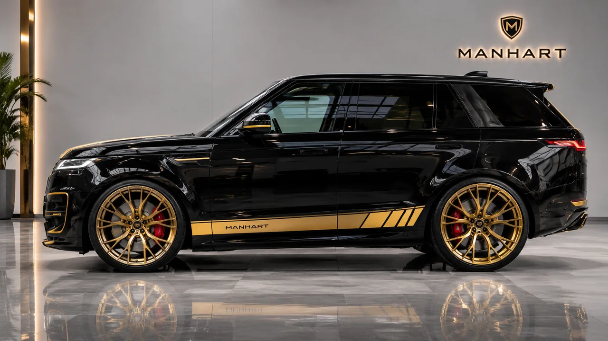
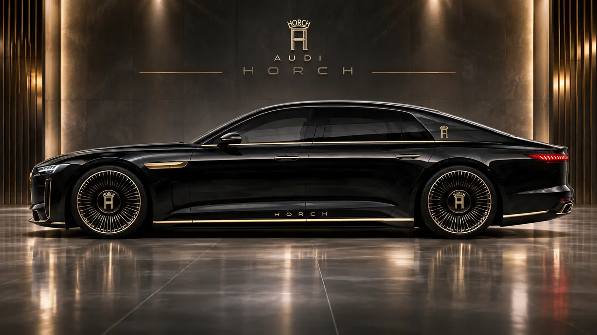
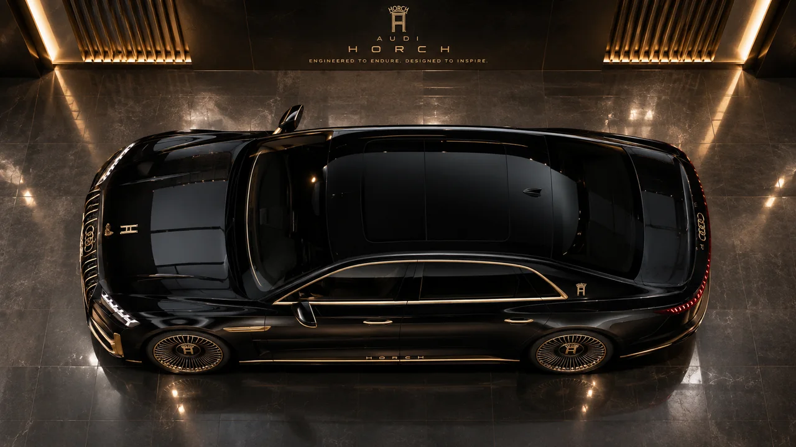
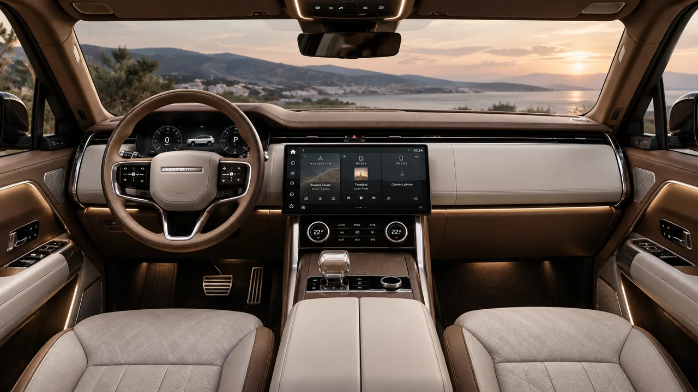
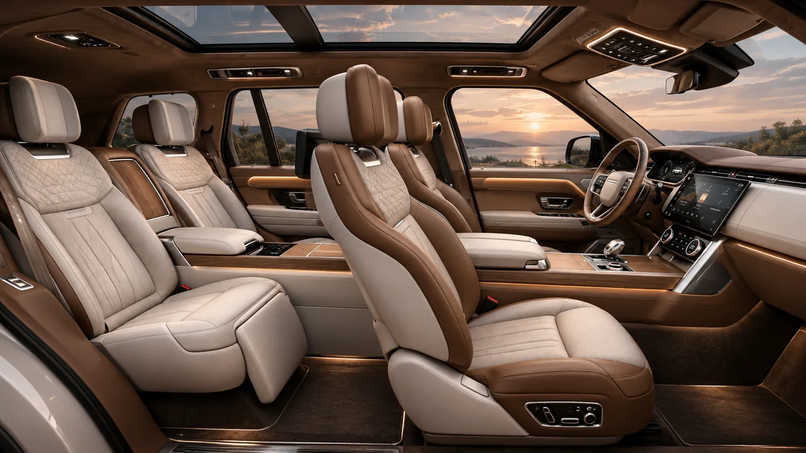
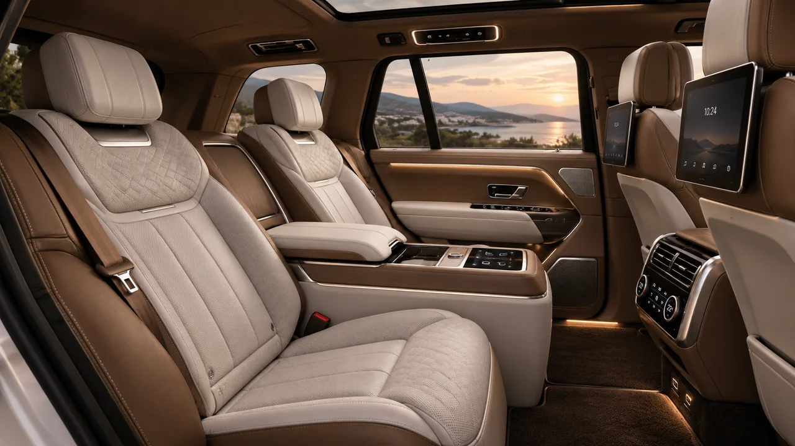
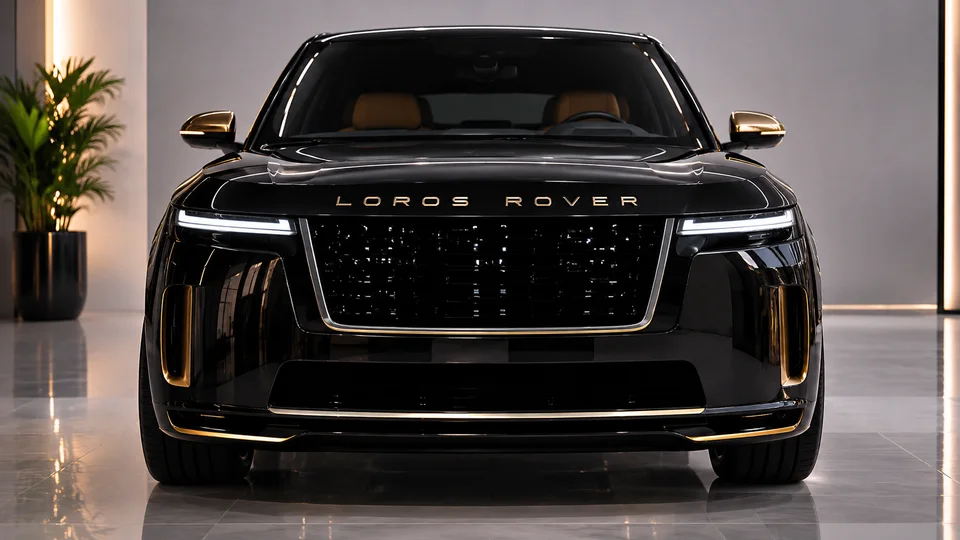
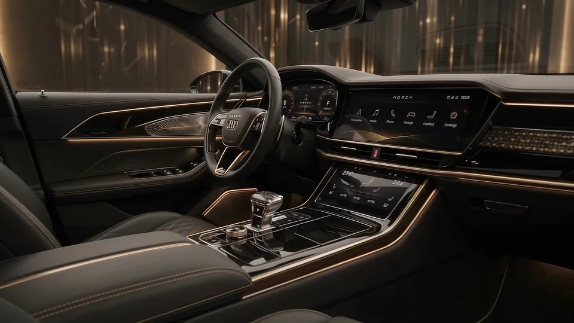
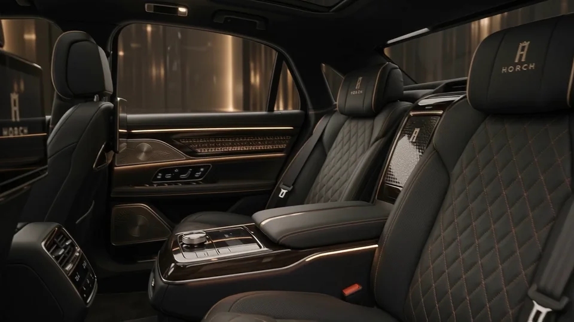

Berlina Executiva
Sob consulta
Audi A8 L Horch · Estúdio Claro
Berlina longa com cabine traseira de primeira classe, iluminação ambiente dourada e presença discreta para a chegada dos noivos.
Estúdio Limusina · Casamentos
Encontrem a viatura que combina com o vosso casamento.
01 · Perfil lateral & saída do estúdio
Proporções de gala em movimento sereno.
Silhueta alongada em preto brilhante e dourado champanhe a ganhar a avenida.
02 · Linha lateral & reflexos
Presença impecável a cada metro do percurso.
Condução suave com motorista dedicado, ritmo calmo para a cerimónia e fotografia.
03 · Chegada à cerimónia
Prontos para escolher a viatura do grande dia?
Explorem o catálogo completo e consultem a disponibilidade para a vossa data.
Frota para casamentos
Cinco propostas distintas, do porte executivo aos SUVs de cerimónia. Seleccionem uma viatura para explorar detalhes e reservar a data.
Berlina longa com cabine traseira de primeira classe, iluminação ambiente dourada e presença discreta para a chegada dos noivos.

Porte elevado em preto brilhante com assinatura dourada e jantes forjadas, ideal para entradas marcantes e cortejos urbanos.
Acabamento branco pérola com detalhes em dourado champanhe, luminoso sob luz natural para cerimónias diurnas e fotografias à saída.

Configuração dedicada para recepções ao entardecer e noite, com tecto panorâmico estrelado e isolamento acústico superior.

Exemplo ilustrativo de curadoria especial sob encomenda antecipada. Para reserva imediata, seleccionem uma das viaturas reais acima.
Três momentos do vosso casamento
As condições de espera, percurso e preparação adaptam-se automaticamente consoante o carro seleccionado na frota.

Recolha pontual no local de preparação, ritmo calmo no trajecto e paragem junto à porta principal para uma entrada tranquila.
Condição · Audi A8 L Horch: motorista em traje formal 20 min antes da hora marcada.

A viatura permanece limpa e posicionada nos ângulos combinados com a equipa de fotografia, em estúdio natural ou exterior.
Condição · Audi A8 L Horch: porta traseira longa e estofos protegidos para o vestido.

Um momento reservado só para os noivos entre a cerimónia e o copo-d'água, em silêncio e climatização confortável.
Condição · Audi A8 L Horch: isolamento acústico duplo e rota directa até ao salão.
Como reservar
Percorram as etapas com as setas, teclado ou deslize táctil antes de enviar a vossa data.

Explorem a frota e seleccionem o carro que combina com a cerimónia.

Partilhem o horário previsto, o local de recolha e o destino.

A equipa Limusina verifica a disponibilidade e comunica o valor e as condições da reserva.
Pedido de disponibilidade
Indiquem a data, a cerimónia e a viatura de preferência. A equipa confirma a disponibilidade e envia a proposta detalhada em Meticais (MT).
Caso prefiram combinar detalhes por escrito, após submeterem o pedido podem também descarregar ou enviar o resumo directamente pela vossa aplicação de correio electrónico.